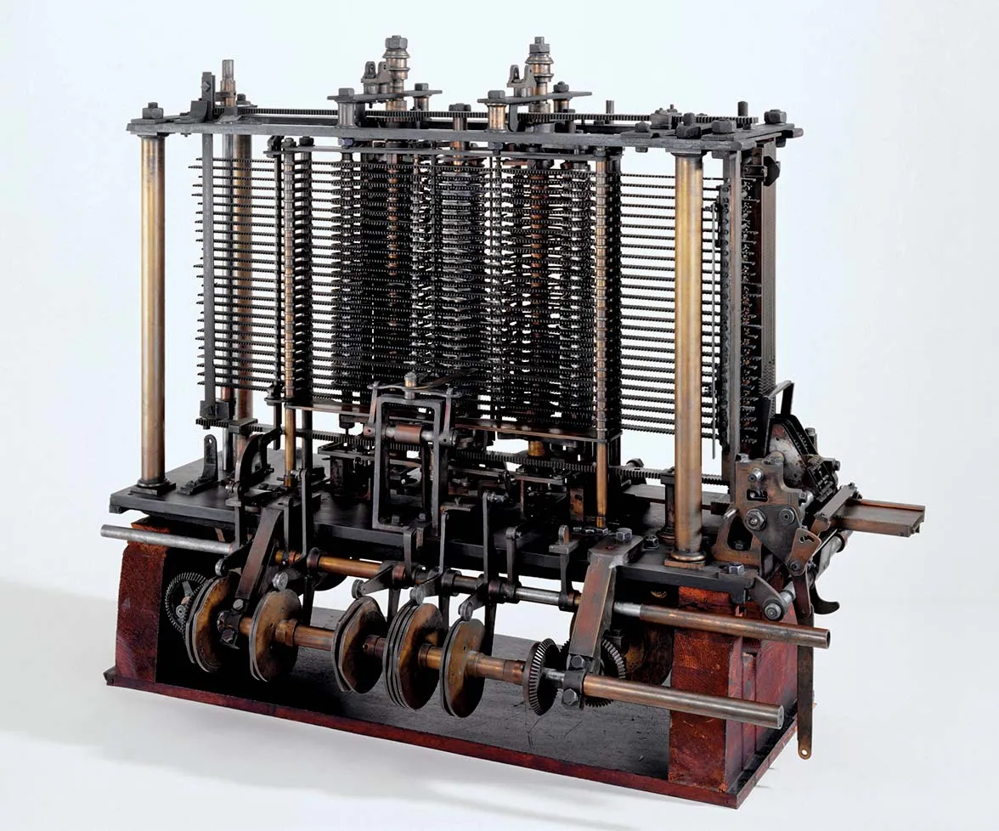

August 22, 2025
In the late seventeenth century, European thought underwent a profound transformation. Working independently, Isaac Newton in England and Gottfried Wilhelm Leibniz in Germany developed calculus, a mathematical framework capable of describing motion, change, and the laws governing the natural world. Calculus became more than a tool for physics; it offered a new language for understanding reality itself. At the same time, Leibniz pursued an even more ambitious project: the characteristica universalis, a universal symbolic language through which reasoning could be expressed and manipulated. His development of binary notation—later compared to the hexagrams of the I Ching—hinted at the possibility that thought could be formalized, encoded, and ultimately mechanized.
These ideas helped shape the intellectual climate of the Enlightenment. With nature increasingly described through elegant equations and universal laws, many thinkers embraced a mechanistic worldview: the universe as a vast, orderly system governed by rational principles. Rationalism became both a philosophical stance and a technological aspiration. If the world operated like a machine, perhaps the mind did as well. Philosophers such as Descartes and Leibniz used mechanical automata as metaphors for cognition, speculating about the extent to which reasoning could be understood—and potentially replicated—through systematic rules.
By the early nineteenth century, these philosophical currents began to manifest in machinery. Joseph-Marie Jacquard’s punched‑card loom revolutionized textile production by allowing patterns to be “programmed” into the device. Though not a logical machine in the modern sense, the loom demonstrated that instructions could be encoded, stored, and executed mechanically. This insight profoundly influenced Charles Babbage, who envisioned machines capable not merely of weaving patterns but of performing calculations. His Difference Engine and the more ambitious Analytical Engine anticipated core features of modern computers: modular architecture, memory storage, symbolic processing, and conditional branching.
Ada Lovelace, working alongside Babbage, recognized the deeper implications of these designs. In her extensive notes on Luigi Menabrea’s description of the Analytical Engine, she articulated the first published algorithm intended for execution by a machine. More importantly, she understood that such a device could manipulate symbols beyond numbers, foreshadowing the concept of general‑purpose computation.
Nearly a century later, Alan Turing distilled these ideas into a theoretical model that defined the limits and possibilities of mechanical computation. His Turing machine formalized the notion of an algorithm and demonstrated that a simple symbolic system could, in principle, perform any computable task. Turing’s work established the foundations of theoretical computer science and opened the conceptual space for artificial intelligence.
Running parallel to these developments was a revolution in logic. In the mid‑nineteenth century, George Boole introduced an algebraic system for representing logical propositions using binary values—true and false, 1 and 0. While Boole’s work was philosophical in intent, it became technologically transformative when Claude Shannon showed in 1937 that Boolean algebra could be implemented using electrical circuits. Every logic gate, microprocessor, and digital system in use today rests on this synthesis of symbolic logic and physical hardware.
Together, these thinkers—Newton, Leibniz, Jacquard, Babbage, Lovelace, Turing, Boole, and Shannon—formed an intellectual lineage that stretches from the rationalist philosophies of the Enlightenment to the digital technologies of the present. Their ideas established the conceptual DNA of modern computation: that reasoning can be formalized, that symbols can be mechanized, and that machines can operate on abstractions with precision and power.